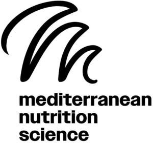

Trade Mark Journal No.2025/021 23 May 2025
WO0000001841937 (1,3,5,41,42,44)
Office of origin: Italy
Date of International Registration:8 November 2023
Date of designation in the UK:
8 November 2023

The trademark consists of a fantasy logo reproducing a sea wave, also readable as an "M", below it the words MEDITERRANEAN NUTRITION SCIENCE.
International priority date claimed: 9 May 2023
(Italy)
(302023000071391)
- Class 1
- Chemical and organic compositions for use in the manufacture of food and beverages; chemical substances, chemical materials and preparations, and natural elements being fruit extracts, botanical and plant extracts for use in the manufacture of cosmetics, for use in the food and beverage industry and for use in the manufacture of pharmaceuticals; chemical compounds and materials for use in science; chemical compounds and materials for use in the manufacture of cosmetics; chemicals for use in the manufacture of pharmaceuticals; plant extracts for use in the manufacture of pharmaceutical products; vitamins for use in the manufacture of pharmaceutical products; chemicals for use in the manufacture of food supplements; plant extracts for use in the manufacture of food supplements; plant extracts for use in the food industry; plant extracts for use in the manufacture of cosmetics; botanical extracts, other than essential oils, for the manufacture of cosmetics.
- Class 3
- Cosmetics; cosmetic preparations; perfumed oils for the manufacture of cosmetic preparations; essential oils and aromatic extracts; cleansing and perfuming preparations; body care and beauty care preparations; perfumery and fragrances; cosmetic oils; cosmetics and cosmetic preparations; toiletries.
- Class 5
- Pharmaceutical and natural medicines; food supplements and dietary preparations; pharmaceutical products.
- Class 41
- Services related to education, entertainment and sport; publishing and editing services; education, entertainment and sport; organization of conferences, exhibitions and competitions; rental services of equipment and facilities for education, entertainment, sport and culture.
- Class 42
- Pharmaceutical research; pharmaceutical and drug product development; pharmaceutical research and development; conducting clinical studies for pharmaceutical products; pharmaceutical research and development consultancy; technical consultancy regarding research services in the field of food and dietary supplements; technical consultancy regarding research services in the field of food and dietary supplements.
- Class 44
- Dietary and nutritional advice; provision of information on dietary and nutritional supplements; provision of information on dietary and nutritional guidance; provision of information on dietary and nutritional supplements; medical assistance.
Esserre Pharma Srl
Representative: DE SIMONE & PARTNERS S.R.L., Via Vincenzo Bellini, 20, I-00198 Roma, ITALY